# A tibble: 10 × 7
id age sex status date_of_onset date_of_sample district
<dbl> <dbl> <chr> <chr> <date> <date> <chr>
1 92 6 M confirmed 2014-06-10 2014-06-15 Kailahun
2 51 46 F confirmed 2014-05-30 2014-06-04 Kailahun
3 230 NA M confirmed 2014-06-26 2014-06-30 Kenema
4 139 25 F confirmed 2014-06-13 2014-06-18 Kailahun
5 8 8 F confirmed 2014-05-22 2014-05-27 Kailahun
6 215 49 M confirmed 2014-06-24 2014-06-29 Kailahun
7 189 13 F confirmed 2014-06-19 2014-06-24 Kailahun
8 115 50 M confirmed 2014-06-10 2014-06-25 Kailahun
9 218 35 F confirmed 2014-06-25 2014-06-28 Kenema
10 159 38 F confirmed 2014-06-14 2014-06-22 Kailahun4 Data dive: Ebola in Sierra Leone
Learning objectives
You can use RStudio’s graphic user interface to import CSV data into R.
You can explain the concept of reproducibility.
You can use the
nrow(),ncol()anddim()functions to get the dimensions of a dataset, and thesummary()function to get a summary of the dataset’s variables.You can use
vis_dat(),inspect_num()andinspect_cat()to obtain visual summaries of a dataset.You can inspect a numeric variable:
with the summary functions
mean(),median(),max(),min(),length()andsum();with esquisse-generated ggplot2 code.
You can inspect a categorical variable:
with the summary functions
table()andjanitor::tabyl();with the graphical functions
barplot()andpie().
4.1 Introduction
With your newly-acquired knowledge of functions and objects, you now have the basic building blocks required to do simple data analysis in R. So let’s get started. The goal is to start working with data as quickly as possible, even before you feel ready.
Here you will analyze a dataset of confirmed and suspected cases of Ebola hemorrhagic fever in Sierra Leone in May and June of 2014 (Fang et al., 2016). The data is shown below:
You will import and explore this dataset, then use R to answer the following questions about the outbreak:
- When was the first case reported?
- What was the median age of those affected?
- Had there been more cases in men or women?
- What district had had the most reported cases?
- By the end of June 2014, was the outbreak growing or receding?
4.2 Script setup
First, open a new script in RStudio with File > New File > R Script. (If you are on RStudio, you can open up any of your previously-created projects.)

Next, save the script with File > Save As or press Command/Control + S to bring up the Save File dialog box. Save the file with the name “ebola_analysis” or something similar
Side Note
Empty your environment at the start of the analysis
When you start a new analysis, your R environment should usually be empty. Verify this by opening the Environment tab; it should say “Environment is empty”. If instead, it shows some previously-loaded objects, it is recommended to restart R by going to the menu option Session > Restart R
4.2.1 Header
Add a title, name and date to the start of the script, as code comments. This is generally good practice for writing R scripts, as it helps give you and your collaborators context about your script. Your header may look like this:
## Ebola Sierra Leone analysis
## John Sample-Name Doe
## 2024-01-014.2.2 Packages
Next, use the p_load() function from {pacman} to load the packages you will be using. Put this under a section header called “Load packages”, with four hyphens, as shown below:
## Load packages ----
if(!require(pacman)) install.packages("pacman")
pacman::p_load(
tidyverse, # meta-package
inspectdf,
plotly,
janitor,
visdat,
esquisse
)
Reminder
Remember that the full signifier of a function includes both the package name and the function name, package::function(). This full signifier is handy if you want to use a function before you have loaded its source package. This is the case in the code chunk above: we want use p_load() from {pacman} without formally loading the {pacman} package, so we type pacman::p_load()
We could also first load {pacman} before using the p_load function:
library(pacman) # first load {pacman}
p_load(tidyverse) # use `p_load` from {pacman} to load other packages(Also recall that the benefit of p_load() is that it automatically installs a package if it is not yet installed. Without p_load(), you have to first install the package with install.packages() before you can load it with library().)
4.3 Importing data into R
Now that the needed packages are loaded, you should import the dataset.
Side Note
About the Ebola dataset
The data you will be working on contains a sample of patient information from the 2014-2016 Ebola outbreak in Sierra Leone. It comes from a research paper which analyzed the transmission dynamics of that outbreak. Key variables include the status of a case, whether the case was “confirmed” or “suspected”; the date_of_onset, when Ebola-like symptoms arose in a patient; and the date_of_sample, when the test sample was taken. To learn more about these data, visit the source publication here: bit.ly/ebola-data-source. Or search the following DOI on DOI.org: 10.1073/pnas.1518587113.
Go to bit.ly/view-ebola-data to view the dataset you will be working on. Then click the download icon at the top to download it to your computer.

You can leave the dataset in your downloads folder, or move it to somewhere more respectable; the upcoming steps will work independent of where the data is stored. In the next lesson, you will learn how to organize your data analysis projects properly, and we will think about the ideal folder setup for storing data.
RStudio Cloud
NOTE: If you are using RStudio Cloud, you need to upload your dataset to the cloud. Do this in the “Files” tab by clicking on the “Upload” button.
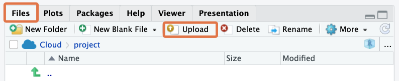
Next, on the RStudio menu, go to File > Import Dataset > From Text (readr). 
Browse through the computer’s files and navigate to the downloaded dataset. Click to open it. You should see an import dialog box like this:

Leave all the import settings at the default values; simply click on “Import” at the bottom; this should load the dataset into R. You can tell this by looking at your environment pane, which should now feature an object called “ebola_sierra_leone” or something similar:

RStudio should also have called the View() function on your dataset, so you should see a familiar spreadsheet view of this data:

Now take a look at your console. Do you observe that your actions in the graphical user interface actually triggered some R code to be run? Copy the line of code that includes the read_csv() function, leaving out the > symbol.
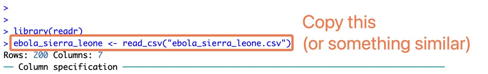
Paste the copied code into your R script, and label this section “Load data”. This may look something like the below (the file path inside quotes will differ from computer to computer.
## Load data ----
ebola_sierra_leone <- read_csv("~/Downloads/ebola_sierra_leone.csv")
Recap
Nice work so far!
Your R script should look similar to this:
## Ebola Sierra Leone analysis
## John Sample-Name Doe
## 2024-01-01
## Load packages ----
if(!require(pacman)) install.packages("pacman")
pacman::p_load(
tidyverse,
inspectdf,
plotly,
janitor,
visdat
)
## Load data ----
ebola_sierra_leone <- read_csv("~/Downloads/ebola_sierra_leone.csv")4.4 Intro to reproducibility
Now that the code for importing data is in your R script, you can easily rerun this script anytime to reimport the dataset; there will be no need to redo the manual point-and-click procedure for data import.
Try restarting R and rerunning the script now. Save your script with Control/Command + s , then restart R with the RStudio Menu, at Session > Restart R. On RStudio Cloud, the menu option looks like this:

If restarting is successful, your console should print this message:

You should also see the phrase “Environment is empty” in the Environment tab, indicating that the dataset you imported is no longer stored by R—you are starting with a fresh workspace.

To re-run your script, use Command/Control + a to highlight all the code, then Command/Control + Enter to run it.
If this worked, congratulations; you have the beginnings of your first “reproducible” analysis script!
Vocab
What does “reproducible” mean?
When you do things with code rather than by pointing and clicking, it is easy for anyone to re-run, or reproduce these steps, by simply re-running your script.
While you can use RStudio’s graphical user interface to point-and-click your way through the data import process, you should always copy the relevant code to your script so that your script remains a reproducible record of all your analysis steps.
Of course, your script so far is not yet entirely reproducible, because the file path for the dataset (the one that looks like this: “…intro-to-data-analysis-with-r/ch01_getting_started/data…”) is specific to just your computer. Later on we will see how to use relative file paths, so that the code for importing data can work on anyone’s computer.
Watch Out
If your environment was not empty after restarting R, it means you skipped a step in a previous lesson. Do this now:
In the RStudio Menu, go to
Tools > Global Optionsto bring up RStudio’s options dialog box.Then go to
General > Basic, and uncheck the box that says “Restore .RData into workspace at startup”.For the option, “save your workspace to .RData on exit”, set this to “Never”.

4.5 Quick data exploration
Now let’s walk through some basic steps of data exploration—taking a broad, bird’s eye look at the dataset. You should put this section under a heading like “Explore data” in your script.
To view the top and bottom 6 rows of the dataset, you can use the head() and tail() functions:
## Explore data ----
head(ebola_sierra_leone)# A tibble: 6 × 7
id age sex status date_of_onset date_of_sample district
<dbl> <dbl> <chr> <chr> <date> <date> <chr>
1 92 6 M confirmed 2014-06-10 2014-06-15 Kailahun
2 51 46 F confirmed 2014-05-30 2014-06-04 Kailahun
3 230 NA M confirmed 2014-06-26 2014-06-30 Kenema
4 139 25 F confirmed 2014-06-13 2014-06-18 Kailahun
5 8 8 F confirmed 2014-05-22 2014-05-27 Kailahun
6 215 49 M confirmed 2014-06-24 2014-06-29 Kailahuntail(ebola_sierra_leone)# A tibble: 6 × 7
id age sex status date_of_onset date_of_sample district
<dbl> <dbl> <chr> <chr> <date> <date> <chr>
1 214 6 F confirmed 2014-06-24 2014-06-30 Kenema
2 28 45 F confirmed 2014-05-27 2014-06-01 Kailahun
3 12 27 F confirmed 2014-05-22 2014-05-27 Kailahun
4 110 6 M confirmed 2014-06-10 2014-06-15 Kailahun
5 209 40 F confirmed 2014-06-24 2014-06-27 Kailahun
6 35 29 M suspected 2014-05-28 2014-06-01 Kenema To view the whole dataset, use the View() function.
View(ebola_sierra_leone)This will again open a familiar spreadsheet view of the data:
You can close this tab and return to your script.
The functions nrow(), ncol() and dim() give you the dimensions of your dataset:
nrow(ebola_sierra_leone) # number of rows[1] 200ncol(ebola_sierra_leone) # number of columns[1] 7dim(ebola_sierra_leone) # number of rows and columns[1] 200 7
Reminder
If you’re not sure what a function does, remember that you can get function help with the question mark symbol. For example, to get help on the ncol() function, run:
?ncolAnother often-helpful function is summary():
summary(ebola_sierra_leone) id age sex status
Min. : 1.00 Min. : 1.80 Length:200 Length:200
1st Qu.: 62.75 1st Qu.:20.00 Class :character Class :character
Median :131.50 Median :35.00 Mode :character Mode :character
Mean :136.72 Mean :33.85
3rd Qu.:208.25 3rd Qu.:45.00
Max. :285.00 Max. :80.00
NA's :4
date_of_onset date_of_sample district
Min. :2014-05-18 Min. :2014-05-23 Length:200
1st Qu.:2014-06-01 1st Qu.:2014-06-07 Class :character
Median :2014-06-13 Median :2014-06-18 Mode :character
Mean :2014-06-12 Mean :2014-06-17
3rd Qu.:2014-06-23 3rd Qu.:2014-06-29
Max. :2014-06-29 Max. :2014-07-17
As you can see, for numeric columns in your dataset, summary() gives you the minimum value, the maximum value, the mean, median and the 1st and 3rd quartiles.
For character columns it gives you just the length of the column (the number of rows), the “class” and the “mode”. We will discuss what “class” and “mode” mean later.
4.5.1 vis_dat()
The vis_dat() function from the {visdat} package is a wonderful way to quickly visualize the data types and the missing values in a dataset. Try this now:
vis_dat(ebola_sierra_leone)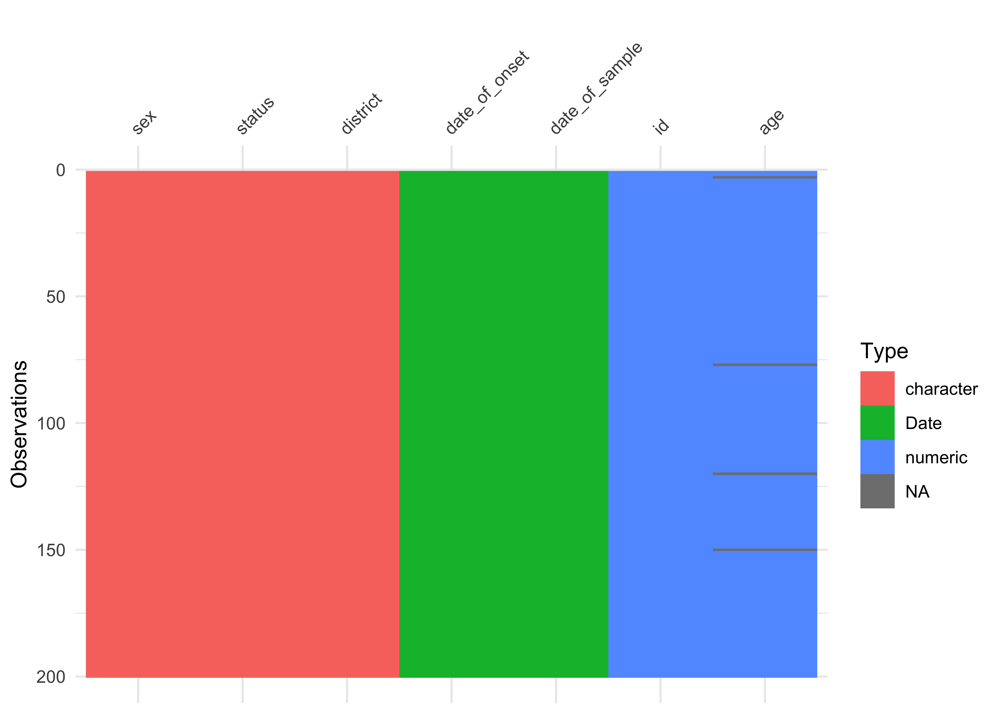
From this figure, you can quickly see the character, date and numeric data types, and you can note that age is missing for some cases.
4.5.2 inspect_cat() and inspect_num()
Next, inspect_cat() and inspect_num() from the {inspectdf} package give you visual summaries of the distribution of variables in the dataset.
If you run inspect_cat() on the data object, you get a tabular summary of the categorical variables in the dataset, with some information hidden in the levels column (later you will learn how to extract this information).
inspect_cat(ebola_sierra_leone)# A tibble: 5 × 5
col_name cnt common common_pcnt levels
<chr> <int> <chr> <dbl> <named list>
1 date_of_onset 39 2014-06-10 10 <tibble [39 × 3]>
2 date_of_sample 45 2014-06-15 9.5 <tibble [45 × 3]>
3 district 7 Kailahun 77.5 <tibble [7 × 3]>
4 sex 2 F 57 <tibble [2 × 3]>
5 status 2 confirmed 91 <tibble [2 × 3]> But the magic happens when you run show_plot() on the result from inspect_cat():
## store the output of `inspect_cat()` in `cat_summary`
cat_summary <- inspect_cat(ebola_sierra_leone)
## call the `show_plot()` function on that summmary.
show_plot(cat_summary)
You get a wonderful figure showing the distribution of all categorical and date variables!
Side Note
You could also run:
show_plot(inspect_cat(ebola_sierra_leone))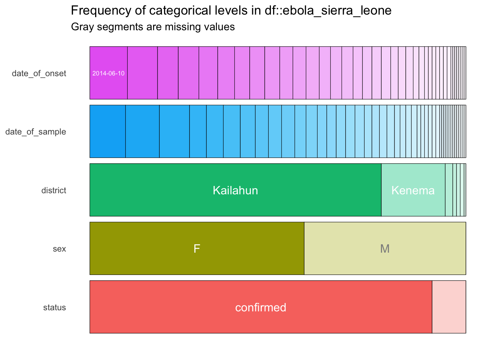
From this plot, you can quickly tell that most cases are in Kailahun, and that there are more cases in women than in men (“F” stands for “female”).
One problem is that in this plot, the smaller categories are not labelled. So, for example, we are not sure what value is represented by the white section for “status” at the bottom right. To see labels on these smaller categories, you can turn this into an interactive plot with the ggplotly() function from the {plotly} package.
cat_summary_plot <- show_plot(cat_summary)
ggplotly(cat_summary_plot)Wonderful! Now you can hover over each of the bars to see the proportion of each bar section. For example you can now tell that 9% (0.090) of the cases have a suspected status:
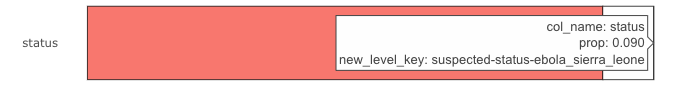
Reminder
The assignment arrow, <-, can be written with the RStudio shortcut alt + - (alt AND minus) on Windows or option + - (option AND minus) on macOS.
You can obtain a similar plot for the numerical (continuous) variables in the dataset with inspect_num(). Here, we show all three steps in one go.
num_summary <- inspect_num(ebola_sierra_leone)
num_summary_plot <- show_plot(num_summary)
ggplotly(num_summary_plot)This gives you an overview of the numerical columns, age and id. (Of course, the distribution of the id variable is not meaningful.)
You can tell that individuals aged 35 to 40 (mid-point 37.5) are the largest age group, making up 13.8% (0.1377…) of the cases in the dataset.
4.6 Analyzing a single numeric variable
Now that you have a sense of what the entire dataset looks like, you can isolate and analyze single variables at a time—this is called univariate analysis.
Go ahead and create a new section in your script for this univariate analysis.
## Univariate analysis, numeric variables ----Let’s start by analyzing the numeric age variable.
4.6.1 Extract a column vector with $
To extract a single variable/column from a dataset, use the dollar sign, $ operator:
ebola_sierra_leone$age # extract the age column in the dataset [1] 6.0 46.0 NA 25.0 8.0 49.0 13.0 50.0 35.0 38.0 60.0 18.0 10.0 14.0 50.0
[16] 35.0 43.0 17.0 3.0 60.0 38.0 41.0 49.0 12.0 74.0 21.0 27.0 41.0 42.0 60.0
[31] 30.0 50.0 50.0 22.0 40.0 35.0 19.0 3.0 34.0 21.0 73.0 65.0 30.0 70.0 12.0
[46] 15.0 42.0 60.0 14.0 40.0 33.0 43.0 45.0 14.0 14.0 40.0 35.0 30.0 17.0 39.0
[61] 20.0 8.0 40.0 42.0 53.0 18.0 40.0 20.0 45.0 40.0 60.0 44.0 33.0 23.0 45.0
[76] 7.0 NA 35.0 36.0 42.0 35.0 25.0 30.0 30.0 28.0 14.0 20.0 60.0 67.0 35.0
[91] 50.0 4.0 28.0 38.0 30.0 26.0 37.0 30.0 3.0 56.0 32.0 35.0 54.0 42.0 48.0
[106] 11.0 1.8 63.0 55.0 20.0 62.0 62.0 42.0 65.0 29.0 20.0 33.0 30.0 35.0 NA
[121] 50.0 16.0 3.0 22.0 7.0 50.0 17.0 40.0 21.0 9.0 27.0 52.0 50.0 25.0 10.0
[136] 30.0 32.0 38.0 30.0 50.0 26.0 35.0 3.0 50.0 60.0 40.0 34.0 4.0 42.0 NA
[151] 54.0 18.0 45.0 30.0 35.0 35.0 16.0 26.0 23.0 45.0 45.0 45.0 38.0 45.0 35.0
[166] 30.0 60.0 5.0 18.0 2.0 70.0 35.0 3.0 30.0 80.0 62.0 20.0 45.0 18.0 28.0
[181] 48.0 38.0 39.0 26.0 60.0 35.0 20.0 50.0 11.0 36.0 29.0 57.0 35.0 26.0 6.0
[196] 45.0 27.0 6.0 40.0 29.0
Vocab
This list of values is called a vector in R. A vector is a kind of data structure that has elements of one type. In this case, the type is “numeric”. We will formally introduce you to vectors and other data structures in a future chapter. In this lesson, you can take “vector” and “variable” to be synonyms.
4.6.2 Basic operations on a numeric variable
To get the mean of these ages, you could run:
mean(ebola_sierra_leone$age)[1] NABut it seems we have a problem. R says the mean is NA, which means “not applicable” or “not available”. This is because there are some missing values in the vector of ages. (Did you notice this when you printed the vector?) By default, R cannot find the mean if there are missing values. To ignore these values, use the argument na.rm (which stands for “NA remove”) setting it to T, or TRUE:
mean(ebola_sierra_leone$age, na.rm = T)[1] 33.84592Great! This need to remove the NAs before computing a statistic applies to many functions. The median() function for example, will also return NA by default if it is called on a vector with any NAs:
median(ebola_sierra_leone$age) # does not work[1] NAmedian(ebola_sierra_leone$age, na.rm = T) # works[1] 35mean and median are just two of many R functions that can be used to inspect a numerical variable. Let’s look at some others.
But first, we can assign the age vector to a new object, so you don’t have to keep typing ebola_sierra_leone$age each time.
age_vec <- ebola_sierra_leone$age # assign the vector to the object "age_vec"Now run these functions on age_vec and observe their outputs:
sd(age_vec, na.rm = T) # standard deviation[1] 17.26864max(age_vec, na.rm = T) # maximum age[1] 80min(age_vec, na.rm = T) # minimum age[1] 1.8summary(age_vec) # min, max, mean, quartiles and NAs Min. 1st Qu. Median Mean 3rd Qu. Max. NA's
1.80 20.00 35.00 33.85 45.00 80.00 4 length(age_vec) # number of elements in the vector[1] 200sum(age_vec, na.rm = T) # sum of all elements in the vector[1] 6633.8Do not feel intimidated by the long list of functions! You should not have to memorize them; rather you should feel free to Google the function for whatever operation you want to carry out. You might search something like “what is the function for standard deviation in R”. One of the first results should lead you to what you need.
4.6.3 Visualizing a numeric variable
Now let’s create a graph to visualize the age variable. The two most common graphics for inspecting the distribution of numerical variables are histograms (like the output of the inspect_num() function you saw earlier) and boxplots.
R has built-in functions for these:
hist(age_vec)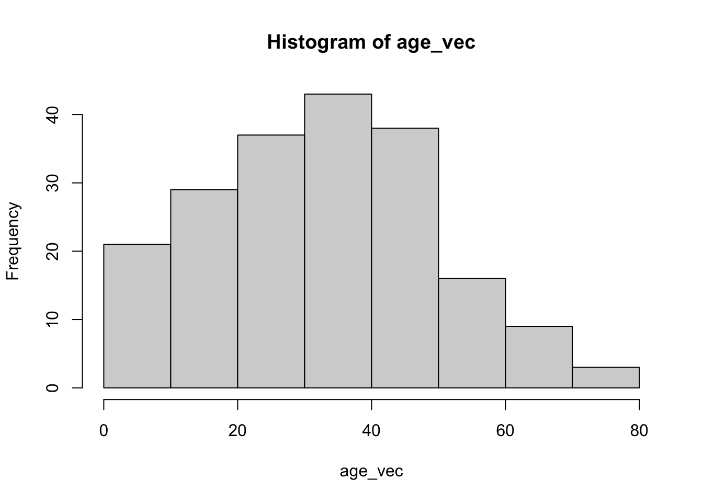
boxplot(age_vec)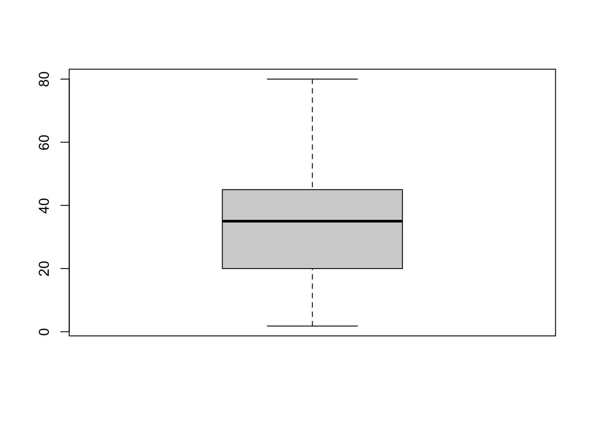
Nice and easy!
Graphical functions like boxplot() and hist() are part of R’s base graphics package. These functions are quick and easy to use, but they do not offer a lot of flexibility, and it is difficult to make beautiful plots with them. So most people in the R community use an extension package, {ggplot2}, for their data visualization.
In this course, we’ll use ggplot indirectly; by using the {esquisse} package, which provides a user-friendly interface for creating ggplot2 plots.
The workhorse function of the {esquisse} package is esquisser(), and this function takes a single argument—the dataset you want to visualize. So we can run:
esquisser(ebola_sierra_leone)This should bring a graphic user interface that you can use to plot different variables. To visualize the age variable, simply drag age from the list of variables into the x axis box:

When age is in the x axis box, you should automatically get a histogram of ages:

You can change the plot type by clicking on the “Histogram” button and selecting one of the other valid plot types. Try out the boxplot, violin plot and density plot and observe the outputs.
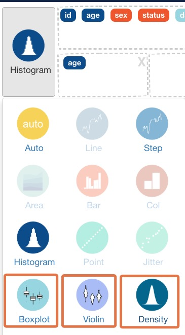
When you are done creating a plot with {esquisse}, you should copy the code that was created by clicking on the “Code” button at the bottom right then “Copy to clipboard”:
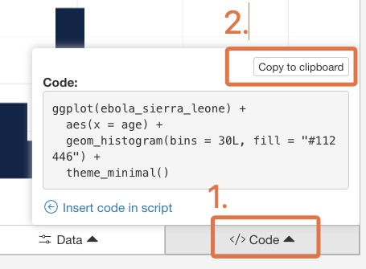
Now, paste that code into your script, and make sure you can run it from there. The code should look something like this:
ggplot(ebola_sierra_leone) +
aes(x = age) +
geom_histogram(bins = 30L, fill = "#112446") +
theme_minimal()By copying the generated code into your script, you ensure that the data visualization you created is fully reproducible.
Pro Tip
{esquisse} can only create fairly simple graphics, so when you want to make highly customized or complex plots, you will need to learn how to write {ggplot} code manually. This will be the focus of a later course.
You should also test out the other tabs on the bottom toolbar to see what they do: Labels & Title, Plot options, Appearance and Data.
Challenge
Easy bivariate and multivariate plots
In this lesson we are focusing on univariate analysis: exploring and visualizing one variable at a time. But with esquisse; it is so easy to make a bivariate or multivariate plot, so you can already get your feet wet with this.
Try the following plots:
Drag
ageto the X box andsexto the Y box.Drag
ageto the X box,sexto the Y box, andsexto the fill box.Drag
ageto the X box anddistrictto the Y box.
4.7 Analyzing a single categorical variable
Next, let’s look at a categorical variable, the districts of reported cases:
## Univariate analysis, categorical variables ----
ebola_sierra_leone$district [1] "Kailahun" "Kailahun" "Kenema" "Kailahun"
[5] "Kailahun" "Kailahun" "Kailahun" "Kailahun"
[9] "Kenema" "Kailahun" "Kailahun" "Kailahun"
[13] "Kailahun" "Kailahun" "Kailahun" "Kailahun"
[17] "Kailahun" "Kenema" "Kono" "Kailahun"
[21] "Kailahun" "Kailahun" "Kenema" "Kailahun"
[25] "Kailahun" "Kailahun" "Kailahun" "Kailahun"
[29] "Kenema" "Kenema" "Kenema" "Kailahun"
[33] "Kailahun" "Bo" "Kailahun" "Kailahun"
[37] "Kailahun" "Kenema" "Kenema" "Kenema"
[41] "Kailahun" "Kailahun" "Kailahun" "Kailahun"
[45] "Kailahun" "Kailahun" "Western Urban" "Kailahun"
[49] "Kailahun" "Kailahun" "Kailahun" "Kailahun"
[53] "Kailahun" "Kailahun" "Kailahun" "Kailahun"
[57] "Kailahun" "Kailahun" "Kailahun" "Kailahun"
[61] "Kailahun" "Kenema" "Western Urban" "Kambia"
[65] "Kailahun" "Kailahun" "Kailahun" "Kailahun"
[69] "Kailahun" "Kailahun" "Kailahun" "Kailahun"
[73] "Kenema" "Kailahun" "Kailahun" "Kenema"
[77] "Kailahun" "Kailahun" "Kenema" "Kailahun"
[81] "Kailahun" "Kailahun" "Kailahun" "Kailahun"
[85] "Kailahun" "Kailahun" "Kailahun" "Kailahun"
[89] "Kailahun" "Kenema" "Kailahun" "Kailahun"
[93] "Kailahun" "Kono" "Port Loko" "Kenema"
[97] "Kailahun" "Kailahun" "Kailahun" "Kailahun"
[101] "Kenema" "Kailahun" "Kailahun" "Kenema"
[105] "Kailahun" "Kailahun" "Kailahun" "Kailahun"
[109] "Kailahun" "Kailahun" "Kenema" "Western Urban"
[113] "Kailahun" "Kailahun" "Kailahun" "Kailahun"
[117] "Kailahun" "Kailahun" "Kailahun" "Kailahun"
[121] "Kailahun" "Kailahun" "Kenema" "Kailahun"
[125] "Kailahun" "Kenema" "Kailahun" "Port Loko"
[129] "Kailahun" "Kailahun" "Kailahun" "Kailahun"
[133] "Kailahun" "Kailahun" "Kailahun" "Kailahun"
[137] "Kailahun" "Kailahun" "Kailahun" "Kailahun"
[141] "Kailahun" "Kailahun" "Kailahun" "Kenema"
[145] "Kenema" "Kailahun" "Kenema" "Kailahun"
[149] "Kailahun" "Kailahun" "Kailahun" "Kailahun"
[153] "Kenema" "Kailahun" "Kailahun" "Kenema"
[157] "Kailahun" "Kenema" "Kailahun" "Kailahun"
[161] "Kenema" "Kailahun" "Kailahun" "Kailahun"
[165] "Kailahun" "Bo" "Kailahun" "Kailahun"
[169] "Kailahun" "Kailahun" "Kailahun" "Kailahun"
[173] "Kenema" "Kailahun" "Kailahun" "Kenema"
[177] "Kailahun" "Kailahun" "Kailahun" "Kailahun"
[181] "Kailahun" "Kailahun" "Kailahun" "Western Urban"
[185] "Kailahun" "Kailahun" "Kenema" "Kailahun"
[189] "Kailahun" "Kailahun" "Kailahun" "Kailahun"
[193] "Kailahun" "Kenema" "Kenema" "Kailahun"
[197] "Kailahun" "Kailahun" "Kailahun" "Kenema" Sorry for printing that very long vector!
4.7.1 Frequency tables
You can use the table() function to create a frequency table of a categorical variable:
table(ebola_sierra_leone$district)
Bo Kailahun Kambia Kenema Kono
2 155 1 34 2
Port Loko Western Urban
2 4 You can see that most cases are in Kailahun and Kenema.
table() is auseful “base” function. But there is a better function for creating frequency tables, called tabyl(), from the {janitor} package.
To use it, you supply the name of your data frame as the first argument, then the name of variable to be tabulated:
tabyl(ebola_sierra_leone, district) district n percent
Bo 2 0.010
Kailahun 155 0.775
Kambia 1 0.005
Kenema 34 0.170
Kono 2 0.010
Port Loko 2 0.010
Western Urban 4 0.020As you can see, tabyl() gives you both the counts and the percentage proportions of each value. It also has some other attractive features you will see later.
Pro Tip
You can also easily make cross-tabulations with tabyl(). Simply add additional variables separated by a comma. For example, to create a cross-tabulation by district and sex, run:
tabyl(ebola_sierra_leone, district, sex) district F M
Bo 0 2
Kailahun 91 64
Kambia 0 1
Kenema 20 14
Kono 0 2
Port Loko 1 1
Western Urban 2 2The output shows us that there were 0 women in the Bo district, 2 men in the Bo district, 91 women in the Kailahun district, and so on.
4.7.2 Visualizing a categorical variable
Now, let’s try to visualize the district variable. As before, the best way to do this is with the esquisser() function from {esquisse}. Run this code again:
esquisser(ebola_sierra_leone)Then drag the district variable to the X axis box:

You should get a bar chart showing the count of individuals across districts. Copy the generated code and paste it into your script.
4.8 Answering questions about the outbreak
With the functions you have just learned, you have the tools to answer the questions about the Ebola outbreak that were listed at the top. Give it a go. Attempt these questions on your own, then look at the solutions below.
- When was the first case reported? (Hint: look at the date of sample)
- As at the end of June 2014, which 10-year age group had had the most cases?
- What was the median age of those affected?
- Had there been more cases in men or women?
- What district had had the most reported cases?
- By the end of June 2014, was the outbreak growing or receding?
Solutions
- When was the first case reported?
min(ebola_sierra_leone$date_of_sample)[1] "2014-05-23"We don’t have the date of report, but the first “date_of_sample” (when the Ebola test sample was taken from the patient) is May 23rd. We can use this as a proxy for the date of first report.
- What was the median age of cases?
median(ebola_sierra_leone$age, na.rm = T)[1] 35The median age of cases was 35.
- Are there more cases in men or women?
tabyl(ebola_sierra_leone$sex) ebola_sierra_leone$sex n percent
F 114 0.57
M 86 0.43As seen in the table, there were more cases in women. Specifically, 57% of cases are of women.
- What district has had the most reported cases?
tabyl(ebola_sierra_leone$district) ebola_sierra_leone$district n percent
Bo 2 0.010
Kailahun 155 0.775
Kambia 1 0.005
Kenema 34 0.170
Kono 2 0.010
Port Loko 2 0.010
Western Urban 4 0.020## We can also plot the following chart (generated with esquisse)
ggplot(ebola_sierra_leone) +
aes(x = district) +
geom_bar(fill = "#112446") +
theme_minimal()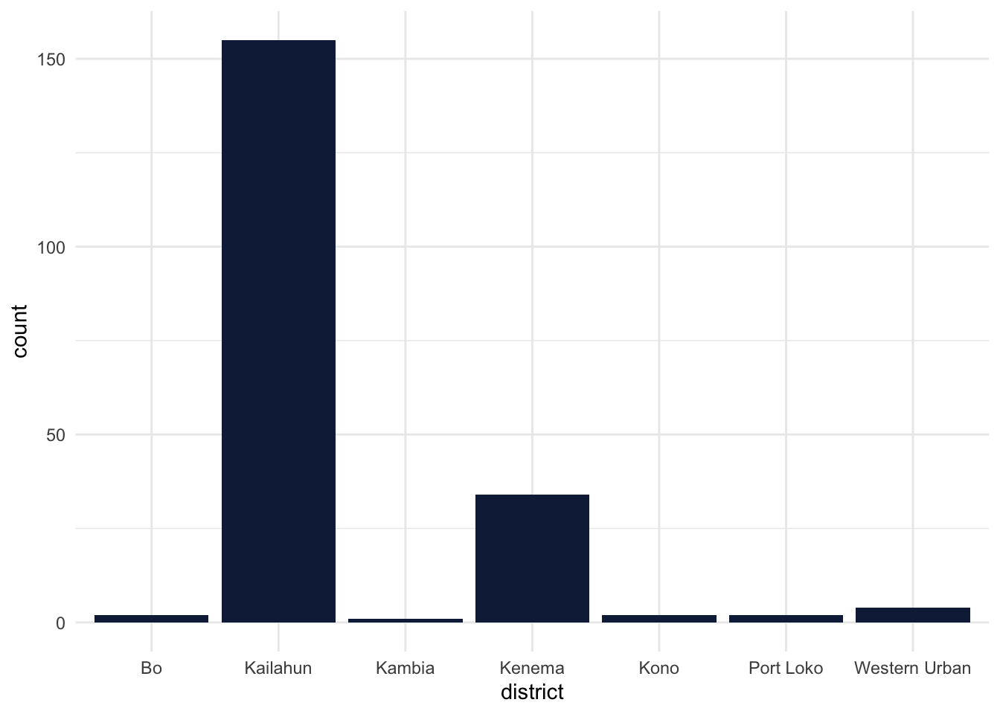
As seen, the Kailahun district had the majority of cases.
- By the end of June 2014, was the outbreak growing or receding?
For this, we can use esquisse to generate a bar chart that shows a count of cases in each day. Simply drag the date_of_onset variable to the x axis. The output code from esquisse should resemble the below:
ggplot(ebola_sierra_leone) +
aes(x = date_of_onset) +
geom_histogram(bins = 30L, fill = "#112446") +
theme_minimal()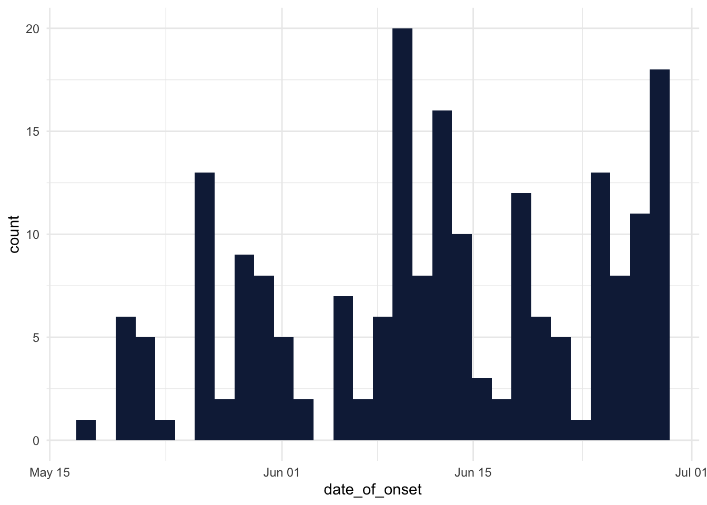
Great! But it is debatable whether the outbreak was growing or receding at the end of June 2014; a precise trend is not really clear!
4.9 Haven’t had enough?
If you would like to practice some of the methods and functions you learned on a similar dataset, try downloading the data that is stored on this page: https://bit.ly/view-yaounde-covid-data
That dataset is in the form of an Excel spreadsheet, so when you are importing the dataset with RStudio, you should use the “From Excel” option (File > Import Dataset > From Excel).
This dataset contains the results of a COVID-19 serological survey conducted in Yaounde, Cameroon in late 2020. The survey estimated how many people had been infected with COVID-19 in the region, by testing for IgG and IgM antibodies. The full dataset can be obtained from here: go.nature.com/3R866wx
4.10 Wrapping up
Congratulations! You have now taken your first baby steps in analyzing data with R: you imported a dataset, explored its structure, performed basic univariate analysis and visualization on its numeric and categorical variables, and you were able to answer important questions about the outbreak based on this.
Of course, this was only a sneak peek of the data analysis process—a lot was left out. Hopefully, though, this sneak peek has gotten you a bit excited about what you can do with R. And hopefully, you can already start to apply some of these to your own datasets. The journey is only beginning! See you soon.
References
Some material in this lesson was adapted from the following sources:
Barnier, Julien. “Introduction à R Et Au Tidyverse.” Partie 13 Diffuser et publier avec rmarkdown, May 24, 2022. https://juba.github.io/tidyverse/13-rmarkdown.html.
Yihui Xie, J. J. Allaire, and Garrett Grolemund. “R Markdown: The Definitive Guide.” Home, April 11, 2022. https://bookdown.org/yihui/rmarkdown/.
This work is licensed under the Creative Commons Attribution Share Alike license.